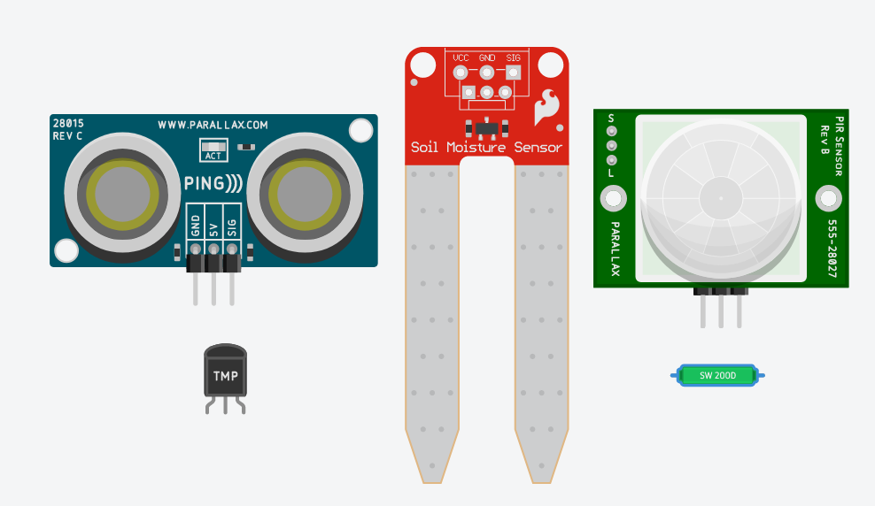
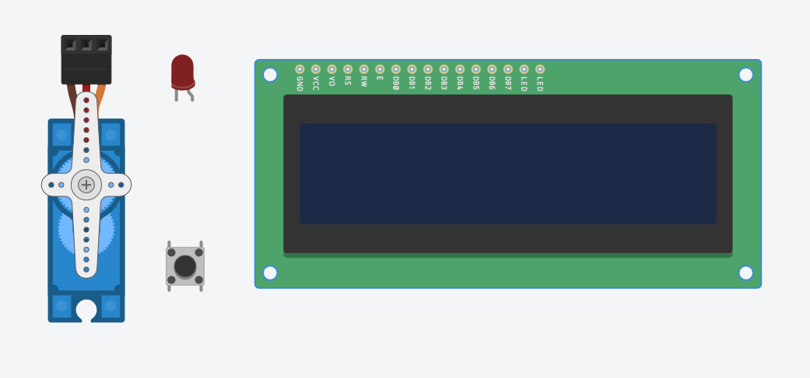

Los sensores y actuadores son componentes fundamentales en el ámbito de la electrónica y la domótica. A continuación, estudiaremos qué son y cuál es su función principal.
Sensores
Los sensores son dispositivos diseñados para detectar y medir cambios en el entorno físico. Estos cambios pueden ser variables como temperatura, luz, presión, movimiento, sonido, entre otros. Los sensores transforman estas magnitudes físicas en señales eléctricas o digitales que pueden ser interpretadas por otros componentes electrónicos, como microcontroladores o sistemas de control. Los sensores nos permiten recopilar información del entorno y proporcionar datos que pueden ser utilizados para tomar decisiones o controlar sistemas.
Algunos ejemplos de sensores podrían ser: sensor de temperatura, sensor de humedad, sensor de presencia o un detector de humo.

Actuadores
los actuadores son dispositivos encargados de convertir señales eléctricas, digitales o de control en acciones físicas o movimientos. Los actuadores reciben instrucciones de otros componentes electrónicos, como microcontroladores o sistemas de control, y ejecutan acciones específicas en respuesta. Estas acciones pueden ser desde encender una luz, mover un motor, abrir una válvula, hasta activar mecanismos más complejos. Los actuadores nos permiten controlar y actuar sobre el entorno físico en función de las decisiones o comandos recibidos.
Algunos ejemplos de actuadores podrían ser: LED, un pulsador, una alarma o un servomotor.

Analogía con el cuerpo humano
Si hiciéramos una comparativa entre un robot y una persona humana, los sensores podrían ser nuestros sentidos: oído, gusto, olfato, vista,.. mientras que los actuadores serían nuestras extremidades: brazos, piernas,...